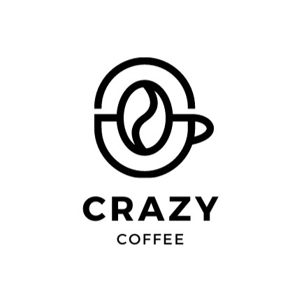
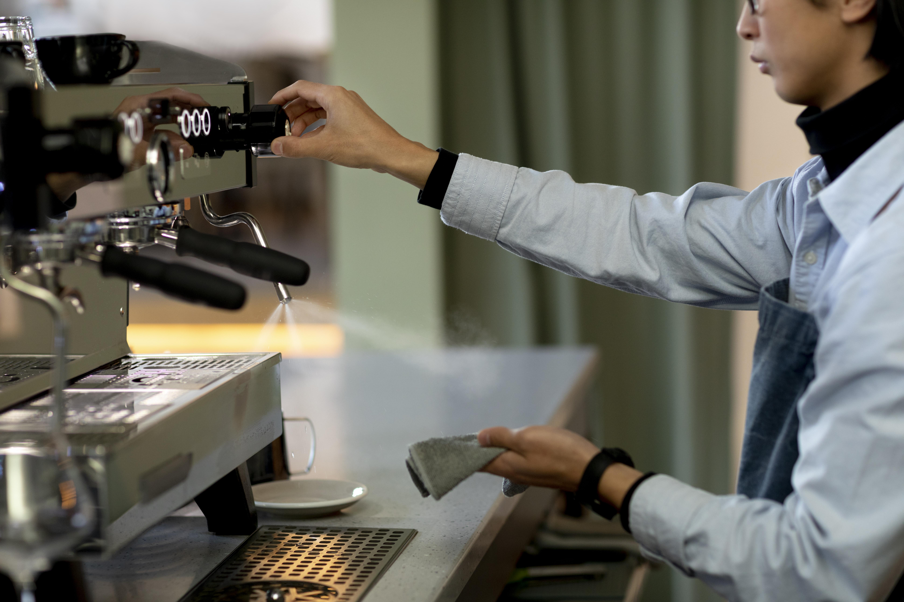
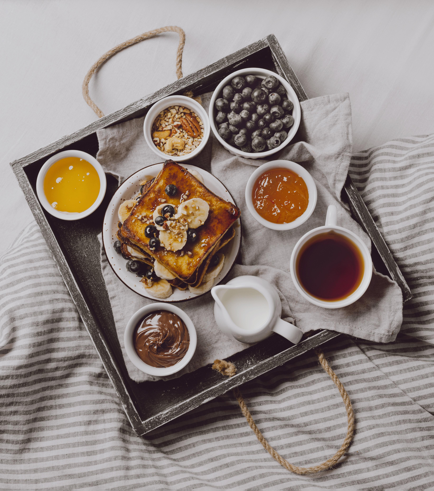
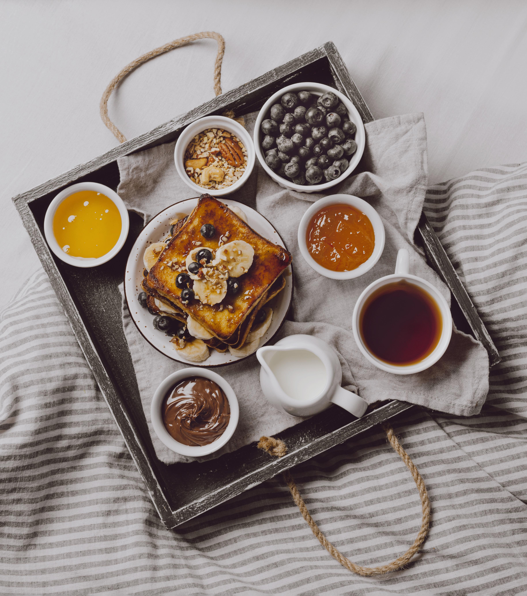

Profile

Kopi telah lama menjadi bagian penting dari budaya Indonesia, menciptakan tradisi yang kaya dan beragam di setiap sudut negeri. Dalam beberapa tahun terakhir, tren konsumsi kopi mengalami perubahan signifikan dengan meningkatnya minat terhadap kopi spesialti dan kafe-kafe dengan konsep unik. Konsumen tidak hanya mencari secangkir kopi yang berkualitas tinggi, tetapi juga pengalaman yang menyeluruh dan memuaskan. Di tengah maraknya kafe yang bermunculan, ada kebutuhan untuk menghadirkan sesuatu yang berbeda dan lebih istimewa.
Crazy Coffee hadir dengan misi untuk menyajikan kopi berkualitas premium yang diproses dengan metode tepat untuk mengeluarkan cita rasa optimal. Kami juga berkomitmen untuk menciptakan pengalaman yang praktis dan memuaskan bagi pelanggan, sehingga mereka bisa memulai hari dengan semangat tanpa perlu repot. Selain itu, Crazy Coffee mendukung keberlanjutan lingkungan dengan menerapkan praktik ramah lingkungan dan bekerja sama dengan petani kopi lokal untuk memastikan kesejahteraan mereka. Dengan visi ini, kami berharap dapat memenuhi kebutuhan pecinta kopi yang semakin cerdas dan menghargai kenyamanan serta kualitas dalam setiap cangkir kopi yang mereka nikmati.
Product

Crazy Coffee adalah kafe modern yang menawarkan berbagai jenis kopi spesialti dengan konsep "take and go" untuk memenuhi kebutuhan pekerja yang ingin menikmati kopi berkualitas secara instan saat pergi ke kantor. Kami menggunakan biji kopi terbaik dari petani lokal dan internasional untuk menghasilkan rasa yang istimewa, serta menyediakan minuman lain seperti teh, cokelat, dan makanan ringan seperti kue, sandwich, dan salad.Selain menyajikan kopi berkualitas premium, Crazy Coffee berkomitmen terhadap keberlanjutan lingkungan dan kesejahteraan petani kopi lokal. Kami juga mengadakan acara seperti sesi cupping, workshop brewing, dan pameran seni untuk memperkuat komunitas pecinta kopi. Dengan fokus pada inovasi rasa, kualitas terbaik, dan suasana yang nyaman, Crazy Coffee berusaha menciptakan pengalaman kopi yang memuaskan dan berbeda bagi setiap pelanggan.
| Product |
Description |
Price |
| Hot Crafee |
Hot Expresso Double Shot |
Rp 25.000 |
| Hot Cratea |
Hot Nature Tea |
Rp 15.000 |
| Hot Cratte |
Hot Latter with Creamer |
Rp 20.000 |
Order

Untuk melakukan pemesanan barang Crazy Coffee, silakan hubungi tim penjualan kami melalui email di sales@crazycoffee.com atau hubungi langsung nomor telepon kami di 0812-3456-7890. Kami siap membantu Anda dalam proses pemesanan dan menyediakan informasi yang dibutuhkan untuk memastikan pengiriman barang tepat waktu sesuai dengan kebutuhan Anda.
Order Via Whatsapp
Documentation

Dokumentasi terkait Crazy Coffee telah disusun dengan
rapi dan tersedia untuk referensi Anda. Silakan kunjungi situs web
kami atau hubungi tim layanan pelanggan kami untuk mendapatkan akses
ke dokumen-dokumen yang diperlukan.
Jenis-Jenis produk
Berikut adalah hasil produk dari Crazy Coffee
 
